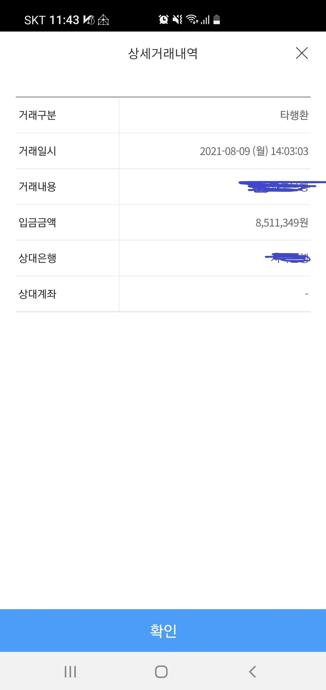

[개인회생자대출] 김한수상담사님 감사합니다.
개인회생자 대출 후기 작성합니다.
현재 상황은 중소기업 10년차 재직 연봉 4800정도인 상태에
개인회생 월 납임금 100만원 정도 36회중 32회차 - 2회 미납
대부업 대출 4건 1600 - 대략 67만원 납부 하고 있는중이였습니다.
총 월 변재금 167만원
처음 김한수 상담사님한테 문의 드릴때는 개인회생 미납 변재 조건 / 대부업 하나로 통합하는걸로 해서 진행을 했는데.
생각지도 못하게 처음 진행한 곳에서 개인회생 전액 납부 및 대부업 전액 변재 조건으로 해서
개인회생 600만원 + 대부업 1600 정도를 한방에 정리 할수 있고 여유 자금 800 정도까지 추가로 나와서
월 변재금이 5년 76만원을 줄었습니다.
시간도 지금까지중 가장 빠르게 진행 되었고요 9시에 문의 드려서 14시에 입금까지 신속하게 끝났습니다.
앞으로 개인회생도 신경 쓰지 않아도 되고 대부업대출도 신경 쓰지 않아도 되어서 좋고
월 변재금 납부도 원금 같이 처리라서 대부업은 이자만 내고 있는 상태였는데.
생각지도 못한 최상의 결과가 나와서 엄청 기뻐하고 있습니다.
다음에 다시 필요할때 또 연락 드릴게요~

https://cafe.naver.com/cityman88/288481